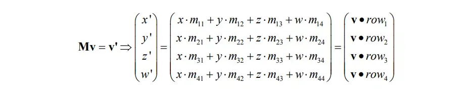

RealTime-Rendering24-Fast Extraction of Frustum Planes from the WorldView-Projection Matrix
Fast Extraction of Frustum Planes from the WorldView-Projection Matrix
推导
假设世界空间的某个向量$\vec{v} = (x,y,z,w), M = m_{ij}$是viewProjectionMatrix，使用矩阵$M$变换$\vec{v}$可以表示为矩阵和向量的乘法：

其中 • 表示向量的点乘，$Row_i = (m_{i1}, m_{i2}, m_{i3}, m_{i4})$表示矩阵$M$的第$i$行。
经过此变换后，顶点$v^′$位于齐次裁剪空间中。在此空间中，视锥体实际上是一个轴对齐的盒状区域，其尺寸由具体API决定。若顶点$v^′$位于该盒内，则未经变换的顶点$v$便处于”未经变换的”视锥体内部。在OpenGL中，当$v^′$的分量满足以下不等式时，$v^′$位于该盒内：
$−w^′<x^′<w^′$
$−w^′<y^′<w^′$
$−w^′<z^′<w^′$
| 条件 | 结论 |
|---|---|
| −w′<x′ | x′位于左裁剪平面的内侧半空间 |
| x′<w′ | x′位于右裁剪平面的内侧半空间 |
| −w′< y′ | y′位于下裁剪平面的内侧半空间 |
| y′<w′ | y′位于上裁剪平面的内侧半空间 |
| −w′<z′ | z′位于近裁剪平面的内侧半空间 |
| z′<w′ | z′位于远裁剪平面的内侧半空间 |
现在假设我们要测试$x^′$是否位于左裁剪平面的内侧半空间。需要满足以下不等式：
$−w^′<x^′$
利用本章开头的信息，我们可以将该不等式重写为：
$−(\vec{v}⋅Row_4)<(\vec{v}⋅Row_1)$
这等价于：
$0<(\vec{v}⋅Row_4)+(\vec{v}⋅Row_1)$
最终得到：
$0<\vec{v}⋅(Row_4+Row_1)$
这实际上已经代表了“未经变换的”视锥体左裁剪平面的平面方程：
w等于1，平面方程可以进一步简化为：
这样就得到了标准平面方程：
其中：
至此，我们证明了视锥体的左裁剪平面可以直接从投影矩阵中提取。需要注意的是，所得平面方程是未归一化的（即平面的法向量不是单位向量），并且该法向量指向内侧半空间。这意味着，当顶点$v$位于左裁剪平面的内侧半空间时，有 $0<ax+by+cz+d$。
归一化平面
归一化平面不仅仅要归一化平面的法线, 同时也要归一化其$d$值. 具体推导过程如下:
平面方程可以用点法式来表达:
如果我们把平面归一化 那么式子就变成:
等价于:
展开后:
注意公式中减号后半部分的常数项就是原来的$d$除以$|n|$, 因为 $d = -\vec{n} \cdot p$
所以如果我们把原方程$ax+by+cz+d=0$归一化，得到的方程应该是：
总结归一化平面的完整步骤:
1.计算法线长度$|n|$
2.将平面方程的$abcd$都除以$|n|$
3.得到归一化后的平面方程：
判断点在平面的哪一侧
只需要将点带入平面方程, 根据返回结果的符号判断即可, 如果$d > 0$, 则在平面的法线朝向halfSpace, 如果$d = 0$, 则点刚好落在平面上, 如果$d < 0$, 则在平面法线相反方向的halfPlane:
1 | enum Halfspace |
code
1 | Frustum extractFrustum(const glm::mat4& viewProj) |
References: